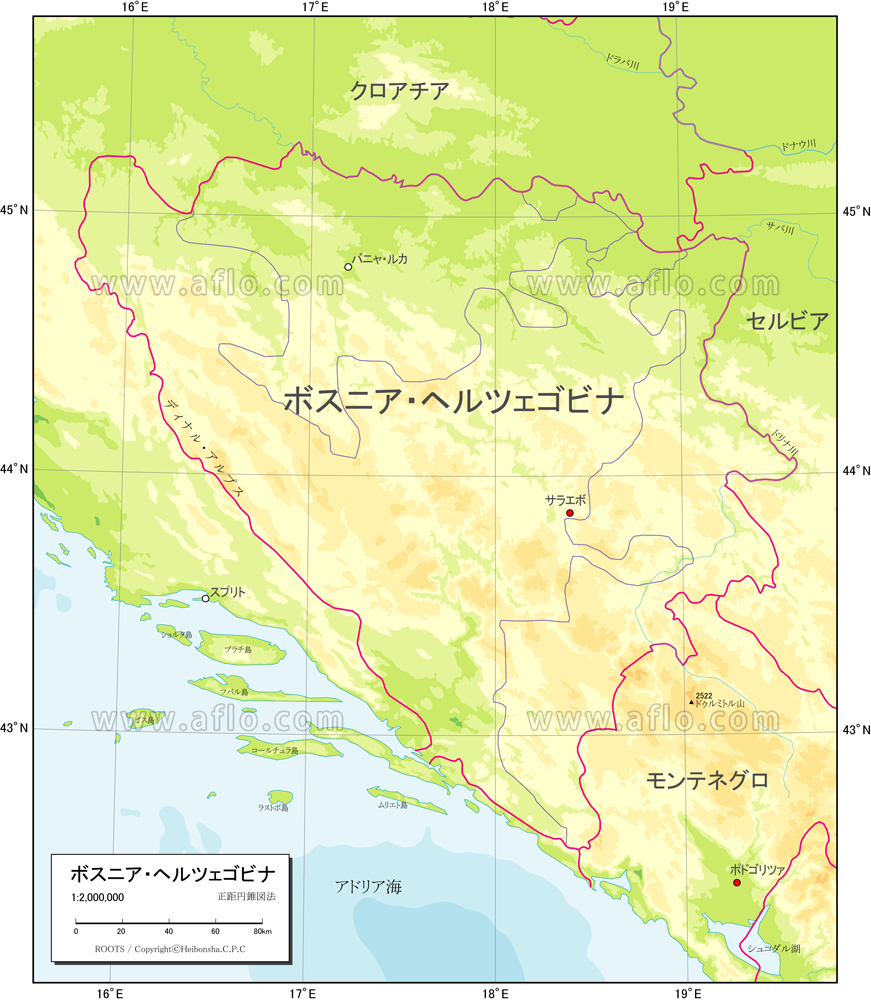
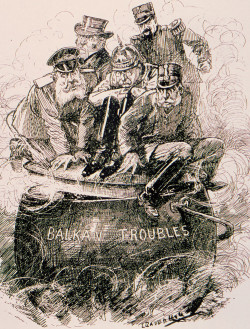
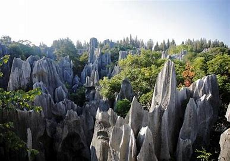
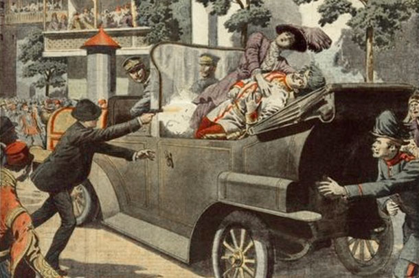
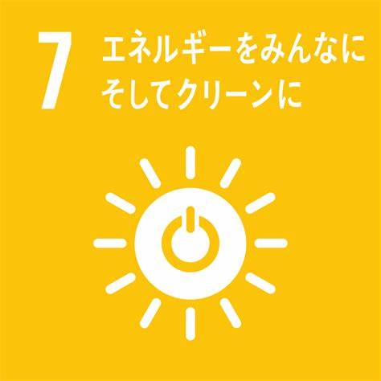
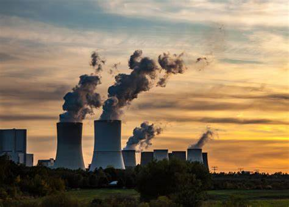

ボスニア・ヘルツェゴビナは、バルカン半島北西部に位置する国です。 北部から西部はクロアチアに囲まれ、東部はセルビア、南部はモンテネグロと国境を接しています。
バルカン半島は「ヨーロッパの火薬庫」と呼ばれていた！
|  |  |
内陸部大陸性気候で夏は暑く乾燥し、冬は寒冷で湿度があり雪も降ります。 山岳部は夏はさわやかですが、冬は寒さが厳しく、多雪にみまわれます。 海岸部は地中海性気候で、夏は暑く乾燥し、冬は穏やかでほとんど雪は降りません。
北部から西部は クロアチア に囲まれ、東部はセルビア、南部はモンテネグロと国境を接しています。 国土の大部分は山地で、南部にディナルアルプス山脈が走り、カルスト地形が発達しています。
首都サラエボでは、1914年にオーストリア皇太子夫妻が
セルビア人青年に暗殺される事件（サラエボ事件）が起こり、
この事件がきっかけとなり、第一次世界大戦が始まりました。
第二次世界大戦後の1945年にユーゴスラビア社会主義連邦共和国が成立し、
1992年に国民投票で独立を宣言しましたが、
民族間の対立から紛争に発展し、3年半も混乱が続いた後、
1995年に和平が成立しました。
イスラム文化とヨーロッパ文化が融合した独特のオリエンタリズム漂う美しい旧市街が見どころです！

スタリ・モストはボスニア・ヘルツェゴビナ紛争で破壊されたことから
「負の世界遺産」と言われています。
日本では広島の原爆ドームがあたります。
ボスニア・ヘルツェゴビナの都市モスタルにある16世紀の橋で、市内を分けているネレトヴァ川に架かっている。
町の象徴となっていたこの橋は、ボスニア・ヘルツェゴビナ紛争中にあたる1993年11月9日午前3時にクロアチア系のカトリック民兵によって破壊されたが、
その後復興計画が持ち上がり、2004年6月23日に復興工事が完了した。
2005年には、ボスニア・ヘルツェゴビナ初のユネスコ世界遺産に登録された。
|  |  |
脱炭素化に向けたクリーンエネルギーの利用拡大と温室効果ガス排出量の削減、 脆弱な環境での気候変動のインパクトに対する適応と回復力の強化 という二つの分野を展開しています。 ボスニア・ヘルツェゴビナで進行中のプロジェクト「包括的な脱炭素化に向けた取り組み」では、 公正かつジェンダー平等を尊重しながら、2050年目標であるカーボンニュートラルを実現するための 行動計画をしています。